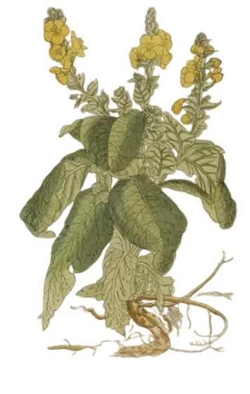
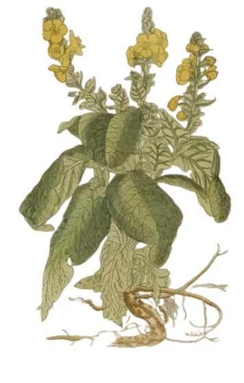

Rise and Shine

The sun rises over Tours, France, around 1517—though Plantin always insisted it was 1520. "Easier to do the math," he'd joke. Baby Plantin is born. Life wasn't all sunshine and roses, though in that time. The plague came around and took his mother with him, leaving young Christophe and his father to face the world alone. moved them to Paris and enrolled Christophe at the prestigious Sorbonne
Leather
and
leaving Cean
By noon, tragedy strikes again: Christophe's father dies. Young Plantin is now an orphan with a knack for survival. He sets off for Caen to learn the noble art of bookbinding as an apprentice. While perfecting his craft, he also learns the basics of printing and book selling—skills that will one day make him famous.
But for now, it's mostly glue, leather, and the occasional paper cut. But life isn't all work and no play. In Caen, Christophe meets Joanna Rivièra. Sparks fly, and soon enough, the two are married and welcoming their first daughter, Margaretha, into the world. It's a lovely place, if your biggest ambition is to own a really nice goat. But Christophe has bigger plans, and Caen just isn't cutting it.
Want to know more about Plantin's family?
->


Martina Plantin
Christoffe L

Jan Moretus
So by evening, Christophe and Joanna move to Antwerp, where they open a modest bookshop. Here, Christophe officially rebrands himself as "Christoffel" because when in Rome—or Antwerp—you adapt. Their family grows with the arrival of their second daughter, Martina Plantin. Martina, clearly inheriting her father's knack for smart partnerships and will one day marry Jan Moretus, a young apprentice who not only wins her heart but also later will take the reins of the family business.

drag and drop the ring on her finger to marry them
Want to know more about Martina Plantin?
->
Want to know more about Jan Moretus?
->
In the Darkness of the Night


Late at night, while delivering an elegant, gilded leather case to the governor, Christoffel is ambushed by thieves. Turns out, bookbinding isn't the safest profession after all.

The attack leaves him with a permanently injured arm, effectively ending his bookbinding career.
A lesser man might have
given up, but not Christoffel. If he couldn't bind books, he'd print them.
Around the same time, Christoffel also welcomed yet another daughter, Catharina.

click to open Plantin's printing house
Officina Plantiniana
The next morning, Christoffel wakes up with a plan—and probably a black eye. With his bookbinding days behind him, Christoffel founds “Officina Plantiniana”—a printing house equipped with 15 presses and a mountain of lead letters of 20,000 kg. From bookbinder to full-blown businessman, Plantin has officially upgraded to a force to be reckoned with.
His first big client? The Familia Caritatis—a sect with religious views that then would've been politely described as “the kind of thing you don't mention at family dinners,” and less politely as “a full-blown theological train wreck.” While the work kept the presses running at full speed, it also lands Christoffel in hot water with the deeply Catholic community. The sect's “creative” takes on faith don't exactly make them the toast of the town. He quickly realises that printing is not just lucrative, it's hazardous to your social life.

Want to know more about the building?
->
Heresy, Headaches, and a House Full of Daughters
By midday, things go south. The authorities raid Plantin's shop and accuse him of heresy. Luckily he was in Paris at the time. They did however auctioned off his printing equipment—because nothing says "church-approved" like seizing a man's livelihood. However, Plantin's persistence pays off—he manages to buy back everything and rebuild.
Meanwhile, his family grows with the births of Magdalena, a feisty feminist who gives her father endless headaches until she's sent off to Paris, and Henrica, his fifth daughter?!—because why stop at four? Plantin starts to wonder if he's running a printing press or a breeding program.


see what's going on in Antwerp
Want to know more about his equipment?
->
botanic


 

Plantin pours his energy into the monumental botanical and technical masterpiece, Dodoens's botanical book. The illustrations in these books are extraordinary, what started as a modest 1,309 woodcuts gets cranked up to a staggering 2,178, because who's counting? These aren't just books; they're the 16th-century equivalent of NFTs—except these actually serve a purpose. The books are so valuable, uncoloured editions are priced at eight guilders, and the hand-coloured versions go for an eye-watering 118 guilders. Why the high price? Well, the painstaking manual colouring process adds value, making them a luxury far beyond the reach of your average worker—unless they were paid hush money by the 16th-century version of Donald Trump.

drag the paint brush to the illustrations to colour it in

His final chapter
As the night rolls in at the end of this day, Christoffel Plantin's remarkable journey nears its end. Surrounded by his family and the fruits of his labor, he passes away peacefully.
His death marks the end of an era, but his legacy endures through the presses, the countless
books he printed, and the
thriving business he built. Plantin's printing house was not just a workshop; it was a
revolutionary force in the
dissemination of knowledge.
Through his dedication and craftsmanship, he helped to change the course of history, making
books more accessible and
changing the landscape of education and communication. His name, immortalised in the annals of
printing and publishing,
will forever be remembered for his transformative impact on the world.